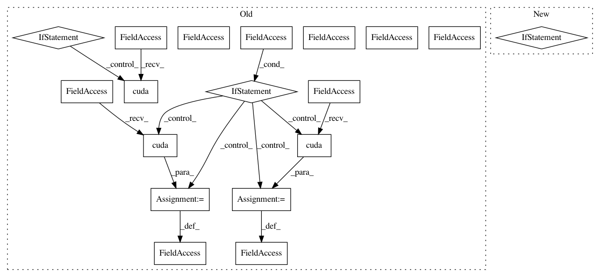

d5b0cd8e7960c247bb7c5b7c832358f8831780fb,ch15/03_train_trpo.py,,,#,90
Before Change
net_act = model.ModelActor(env.observation_space.shape[0], env.action_space.shape[0])
net_crt = model.ModelCritic(env.observation_space.shape[0])
if args.cuda:
net_act.cuda()
net_crt.cuda()
print(net_act)
print(net_crt)
writer = SummaryWriter(comment="-trpo_" + args.name)
agent = model.AgentA2C(net_act, cuda=args.cuda)
exp_source = ptan.experience.ExperienceSource(env, agent, steps_count=1)
opt_crt = optim.Adam(net_crt.parameters(), lr=LEARNING_RATE_CRITIC)
trajectory = []
best_reward = None
with ptan.common.utils.RewardTracker(writer) as tracker:
for step_idx, exp in enumerate(exp_source):
rewards_steps = exp_source.pop_rewards_steps()
if rewards_steps:
rewards, steps = zip(*rewards_steps)
writer.add_scalar("episode_steps", np.mean(steps), step_idx)
tracker.reward(np.mean(rewards), step_idx)
if step_idx % TEST_ITERS == 0:
ts = time.time()
rewards, steps = test_net(net_act, test_env, cuda=args.cuda)
print("Test done in %.2f sec, reward %.3f, steps %d" % (
time.time() - ts, rewards, steps))
writer.add_scalar("test_reward", rewards, step_idx)
writer.add_scalar("test_steps", steps, step_idx)
if best_reward is None or best_reward < rewards:
if best_reward is not None:
print("Best reward updated: %.3f -> %.3f" % (best_reward, rewards))
name = "best_%+.3f_%d.dat" % (rewards, step_idx)
fname = os.path.join(save_path, name)
torch.save(net_act.state_dict(), fname)
best_reward = rewards
trajectory.append(exp)
if len(trajectory) < TRAJECTORY_SIZE:
continue
traj_states = [t[0].state for t in trajectory]
traj_actions = [t[0].action for t in trajectory]
traj_states_v = Variable(torch.from_numpy(np.array(traj_states, dtype=np.float32)))
traj_actions_v = Variable(torch.from_numpy(np.array(traj_actions, dtype=np.float32)))
if args.cuda:
traj_states_v = traj_states_v.cuda()
traj_actions_v = traj_actions_v.cuda()
traj_adv_v, traj_ref_v = calc_adv_ref(trajectory, net_crt, traj_states_v, cuda=args.cuda)
mu_v = net_act(traj_states_v)
old_logprob_v = calc_logprob(mu_v, net_act.logstd, traj_actions_v)
// normalize advantages
traj_adv_v = (traj_adv_v - torch.mean(traj_adv_v)) / torch.std(traj_adv_v)
// drop last entry from the trajectory, an our adv and ref value calculated without it
trajectory = trajectory[:-1]
old_logprob_v = old_logprob_v[:-1].detach()
traj_states_v = traj_states_v[:-1]
traj_actions_v = traj_actions_v[:-1]
sum_loss_value = 0.0
sum_loss_policy = 0.0
count_steps = 0
// critic step
opt_crt.zero_grad()
value_v = net_crt(traj_states_v)
loss_value_v = F.mse_loss(value_v, traj_ref_v)
loss_value_v.backward()
opt_crt.step()
// actor step
def get_loss():
mu_v = net_act(traj_states_v)
logprob_v = calc_logprob(mu_v, net_act.logstd, traj_actions_v)
action_loss_v = -traj_adv_v.unsqueeze(dim=-1) * torch.exp(logprob_v - old_logprob_v)
return action_loss_v.mean()
def get_kl():
mu_v = net_act(traj_states_v)
logstd_v = net_act.logstd
mu0_v = mu_v.detach()
logstd0_v = logstd_v.detach()
std_v = torch.exp(logstd_v)
std0_v = std_v.detach()
kl = logstd_v - logstd0_v + (std0_v ** 2 + ((mu0_v - mu_v) ** 2) / (2.0 * std_v ** 2)) - 0.5
return kl.sum(1, keepdim=True)
trpo.trpo_step(net_act, get_loss, get_kl, TRPO_MAX_KL, TRPO_DAMPING, cuda=args.cuda)
trajectory.clear()
writer.add_scalar("advantage", traj_adv_v.mean().data.cpu().numpy()[0], step_idx)
After Change
parser.add_argument("-n", "--name", required=True, help="Name of the run")
parser.add_argument("-e", "--env", default=ENV_ID, help="Environment id, default=" + ENV_ID)
args = parser.parse_args()
device = torch.device("cuda" if args.cuda else "cpu")
save_path = os.path.join("saves", "trpo-" + args.name)
os.makedirs(save_path, exist_ok=True)
In pattern: SUPERPATTERN
Frequency: 3
Non-data size: 18
Instances
Project Name: PacktPublishing/Deep-Reinforcement-Learning-Hands-On
Commit Name: d5b0cd8e7960c247bb7c5b7c832358f8831780fb
Time: 2018-04-29
Author: max.lapan@gmail.com
File Name: ch15/03_train_trpo.py
Class Name:
Method Name:
Project Name: PacktPublishing/Deep-Reinforcement-Learning-Hands-On
Commit Name: 84e2cf87e0fe23fe3432b74ab484b1b71cd729b3
Time: 2018-04-29
Author: max.lapan@gmail.com
File Name: ch18/train.py
Class Name:
Method Name:
Project Name: PacktPublishing/Deep-Reinforcement-Learning-Hands-On
Commit Name: 7a6e3b93fb4b97af7b06244b768b1fee4b547c17
Time: 2018-04-29
Author: max.lapan@gmail.com
File Name: ch12/train_scst.py
Class Name:
Method Name: